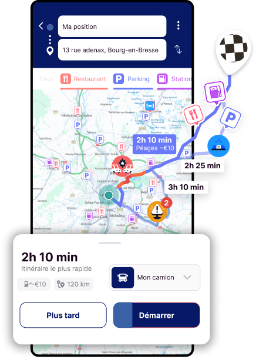

GPS Michelin Truckfly
Signale les alertes sur ta route
Repère les alertes sur ton trajet
Un souci sur la route ?
Clique sur le bouton jaune
Choisis ton alerte
Et préviens les autres conducteurs !

Repère les alertes sur ton trajet
Un souci sur la route ?
Clique sur le bouton jaune
Choisis ton alerte
Et préviens les autres conducteurs !
